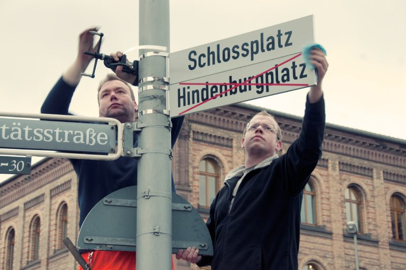
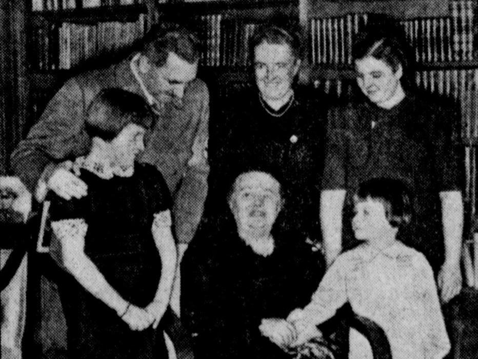
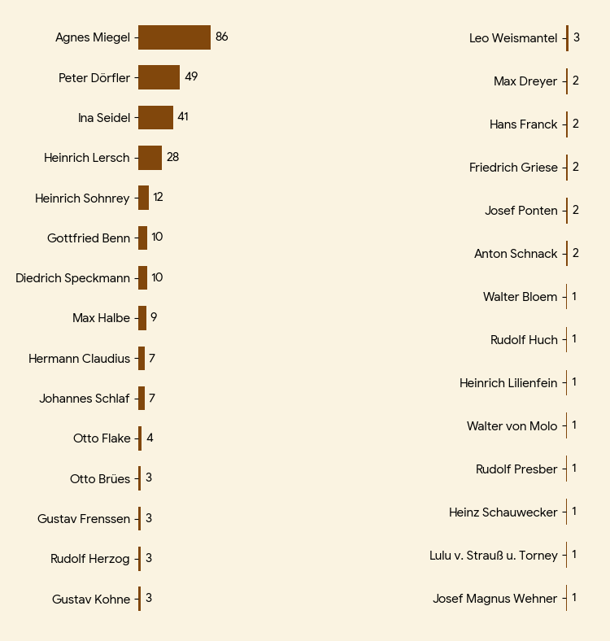
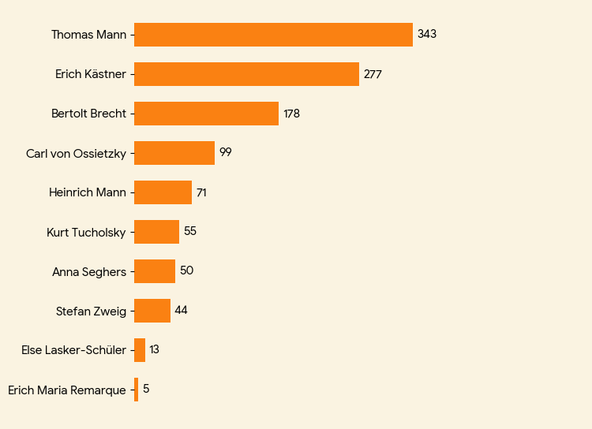
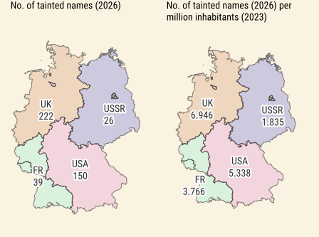
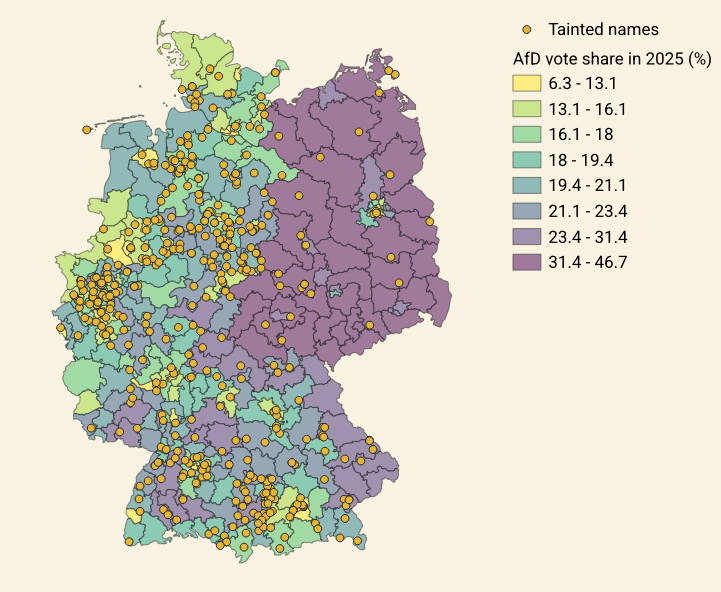
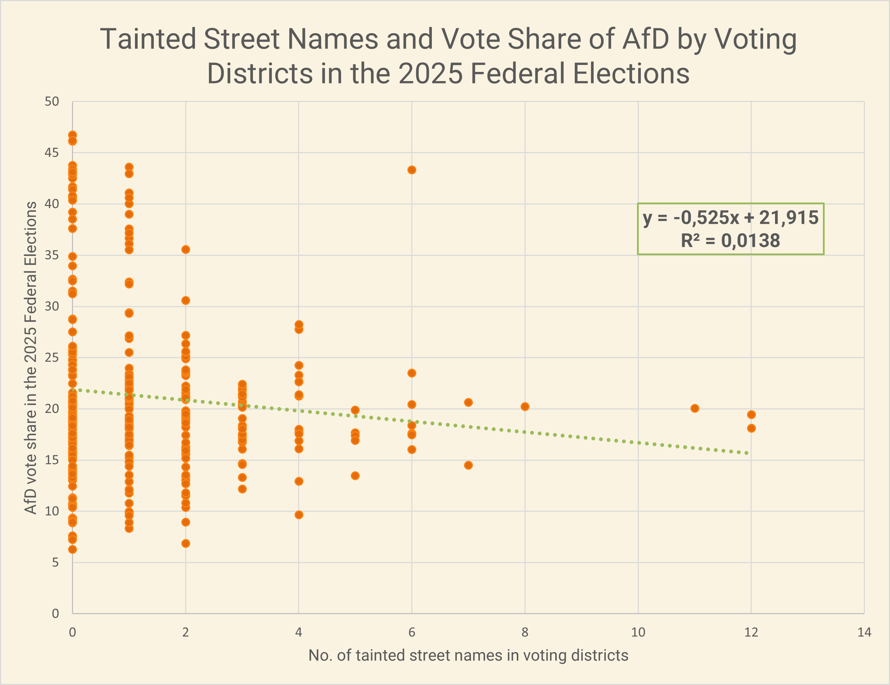

Introduction

Since the 2010s, debates in Germany about controversial street and square names—honors for historical figures in public space—have intensified. These debates are fueled not only by those interested in history but also by current developments that seem to challenge democratic values, cosmopolitanism, and the commitment to human rights.
Following the 2011 exposure of the neo-Nazi terrorist organization NSU (National Socialist Underground) and the rise of right-wing populist movements since the mid-2010s, local politicians in many areas have reconsidered the names of streets and other public landmarks honoring old colonialists and racists—and particularly the supporters of Nazi rule. Prominent examples include cities such as Münster, Kiel, and Hamburg, which removed the name of Paul von Hindenburg (1847-1934) from central squares, waterfront promenades, and major thoroughfares, thereby banishing from the urban landscape the World War I general and anti-democratic president of the Weimar Republic (1925-1934) who had helped Hitler into power. A comparable shift has affected once-popular authors who promoted the Nazi regime and wartime sacrifice, such as Agnes Miegel, Ina Seidel, and Gustav Frenssen—figures largely forgotten today.
Debates about public honors and changing street names often spark intense public controversy and are sometimes conducted contentiously in the national public sphere. In principle, however, discussions about whether or not specific street names and honors in public spaces are still acceptable are a matter of municipal politics. In a guideline from 2021, the German Association of Cities points to the complexity of decision-making processes — which must consider not only historical research, but also local sense of identity and municipal finances. Whether or not contested names remain, whether or not they are supplemented with explanatory plaques, or disappear entirely — these issues are frequently contested at the local level.
The Cases

{kind=link}
The interactive web map presented here offers a new perspective on the problem. Based on OpenStreetMap data (from February 2026), it locates three frequently criticized groups of namesakes across the entire country, thereby making overarching patterns visible. The data point to historical and structural factors that led to the prevalence—or the absence—of Nazi-associated names, most notably the different policies of Allied military governments in 1945 to 1949 and the 1949-1990 division of Germany into East and West.
The map does not provide a complete overview of all Nazi-associated names in Germany’s public space—an almost impossible task—nor does it attempt to assign definitive guilt to individual figures. Instead, the map focuses on the representation of three selected groups:
- Paul von Hindenburg (1847–1934), due to the widespread prevalence of his name in the streetscape. The former World War I general served as President of the Weimar Republic from 1925 until his death in 1934. In this capacity, he appointed Adolf Hitler as Chancellor on January 30, 1933, despite the Nazi Party lacking a parliamentary majority. In the following months, Hindenburg signed key emergency decrees and laws—including the Reichstag Fire Decree and the Enabling Act—which suspended fundamental civil rights. In doing so, he contributed decisively to the Nazi leadership's ability to destroy the Weimar Republic and establish a dictatorship.
- Industrialists who were convicted in the Nuremberg Industrialist Trials (Krupp, Flick, and IG Farben) in 1947/48, primarily for the exploitation, mistreatment, and "attrition" of forced laborers, as well as for the theft of Jewish property ("Aryanization").
- 88 writers who, in October 1933—after the first book burnings, the crushing of democracy, and the beginning of systematic persecution of Jews—signed a public "Vow of most faithful allegiance" (Gelöbnis treuester Gefolgschaft) for Adolf Hitler and thus committed themselves to the regime.
These three categories form only a part of Nazi-associated namesakes in the German streetscape. Doubtlessly, there were numerous politicians still honored today who willfully participated in building the dictatorship, industrialists who supported the regime and profited from its crimes, as well as writers who supported it ideologically.
The mapping of the writer group does not differentiate between the motives of individual signatories for joining the "vow of allegiance" or whether they also worked for the regime in other ways. The spectrum of signatories ranges from convinced Nazis and glowing Hitler admirers such as Hanns Johst, Agnes Miegel, Ina Seidel, or temporarily Gottfried Benn, to authors like Otto Flake and Oskar Loerke, who saw the signature primarily as a regrettable means of protection for themselves, their families, and their publishers. Due to participation in the appeal, there are controversial debates today about commemorative namings after all of the involved authors.
The map does not show how municipalities currently handle historically tainted names. The OpenStreetMap data used for this project does not specify whether municipalities have installed plaques to provide critical historical context or if the names remain without commentary.
The map makes no claim to completeness and does not serve to assess individual guilt. The current handling of controversial honors is only recognizable in the map if names were deleted. However, the focus taken here makes it possible to highlight larger historical contexts and regional peculiarities of naming and commemorative practice. Where in today's Germany are there Nazi-associated names in public space—commented or uncommented? The map provides information about all of this.
The Map
Analysis

According to OpenStreetMap data from February 2026, there are still a total of 437 street names in Germany dedicated to the historically tainted persons selected here: Paul von Hindenburg, writers who signed the "Vow of most faithful allegiance" for Adolf Hitler in October 1933, and industrialists who were sentenced to prison as war criminals in the Subsequent Nuremberg Trials 1947/48. Within this corpus, the signing writers form the most extensive group with 296 names, followed by Hindenburg with 130 honors and the convicted industrialists with a total of 11 honors. Among the individually most frequently honored persons, Paul von Hindenburg stands out, followed, with a significant gap, by various writers.

Overall, of the 88 signatories of the "Vow of most faithful allegiance," 29 are still honored with street names today. The four most frequently honored authors—Agnes Miegel (1879–1964), Peter Dörfler (1878–1955), Ina Seidel (1885–1974), and Heinrich Lersch (1889–1936)—account for nearly seventy percent of these names alone.
None of these frequently honored authors can be considered "ambivalent cases"—such as the far less frequently honored Otto Flake. Rather, Miegel, Dörfler, Seidel, and Lersch were enthusiastic advocates of the Nazi seizure of power.
Four Nazi Writers Still Frequently Honored in 2026
Agnes Miegel, Peter Dörfler, Ina Seidel, and Heinrich Lersch, who are still relatively frequently honored in the German streetscape today, identified strongly with the Nazi regime. With the exception of Seidel, they owed their admission in the summer of 1933 to the Nazi-fied Prussian Academy of Arts—which had been purged of democrats—to the new rulers; a move that gave their public profiles a significant boost. These authors, who originally hailed from the national-conservative spectrum, used their expanded reach in line with the ideals of the regime.
The Catholics Heinrich Lersch and Peter Dörfler embraced the Nazi Gleichschaltung (enforced conformity) of culture, hoping for a moral renewal in the sense of völkisch-conservative ideals. The "worker-poet" Lersch, whose most famous line reads "Germany must live, even if we must die!", welcomed the violent exclusion of realist writers—whom he despised as "asphalt literati" and "Ullstein communists"—that accompanied the book burnings. "It is a stroke of luck anyway that the foolish heart is allowed in poetry again, that 'nature' is permitted again and perhaps love too—or will it just be like the barracks yard: Sunday afternoons at the brothel. God forbid!" (Letter dated May 22, 1933, cited in S. Elbing: Heinrich Lersch (1889–1939), Bielefeld 2014, p. 251)
The Catholic priest and educator turned writer Peter Dörfler published a racist pamphlet in 1933 that attacked the supposedly too cosmopolitan "morals and language" of the Weimar Republic. A "mass of translations" in literature and theater, modern art, and jazz music (described as "dances of depraved niggers") had partially decomposed the "German soul." Fortunately, "that pansexualism which increasingly turned our intellectual field into a swamp [...] is now feeling the strong hand of the new state instead of the cautious kid gloves." "The list of blacklisted books and also the pyre that burns the bad book" were to him a "beacon that flares up and a sign, visible from afar, of renunciation and the desire for purity." (P. Dörfler: Von Sitte und Sprache, Oldenburg 1933, pp. 15–17, 66–68)
On the occasion of Adolf Hitler's 50th birthday in April 1939, the poets Miegel and Seidel penned impassioned declarations of praise with erotic and messianic undertones.
Miegel:
"Earth, which withered like a widow's womb,
maternal earth, newly revered,
bore, rejuvenated by his word,
grain and children.
And he gave back to the beautiful
hearth and spindle.
[...]
Let us, in your hand,
Führer, confess before all the world:
You and we,
never more to be parted,
stand as one for our German land!"
("To the Protector of the People," 1939, Source)
Seidel:
"Where we stand as Germans, as fathers and mothers of the youth and of the
future of the Reich, we feel our striving and our work today is united gratefully and humbly in
the work of the chosen one of the generation—in the work of Adolf Hitler."
(Source)
In 2026, Miegel (86 streets), Dörfler (49), Seidel (41), and Lersch (28) still have a significant presence in the German streetscape. Nevertheless, their share of the total stock of street names by no means corresponds to the ideals of the Nazis once revered by these authors. To compare:

Comparing the prevalence of the Nazi-associated authors with writers who were persecuted or forced into exile reveals a telling pattern: while these prominent Nazi supporters remained part of a pluralistic post-war naming tradition, they were no longer—as they had been in 1933—elevated to the status of cultural standard-bearers. Thomas Mann, for instance, who was forced out of the Prussian Academy of Arts in 1933, is commemorated nearly four times as often as Miegel. Similarly, Erich Kästner, Bertolt Brecht, and Carl von Ossietzky—whose books were fed to Nazi bonfires—are significantly more common namesakes in today's Germany. Authors like Anna Seghers and Else Lasker-Schüler, however, both central to German curricula and cultural memory, remain less represented in the streetscape than their Nazi-aligned contemporary Agnes Miegel.
The industrialists convicted of war crimes have a smaller overall presence in the German streetscape. Here Alfried Krupp von Bohlen und Halbach (5 names) and Friedrich Flick (4) stand out, while Max Ilgner from I.G. Farben and the Flick confidant Bernhard Weiss are represented with one street name each.
Street names in honor of persons tainted by their Nazi association are partly relics of the time before 1945; some, however, are products of the post-war period. Paul von Hindenburg died in 1934, and already in the previous year, the Nazi rulers named many streets and plazas after him. Many of the writers (except Heinrich Lersch all of the particularly widespread namesakes) as well as the industrialists convicted of war crimes died well after the war. Since naming honors are usually bestowed posthumously, the namings are likely from the more recent decades.

The map thus offers a view of the different post-war traditions regarding Nazi-associated names—both the preservation of existing honors and the creation of new ones—across the occupation zones and later German states. The statistical analysis for the year 2026 shows striking disparities relative to the 2023 population figures. The highest concentration of tainted names today is found in the former British zone with 6.946 cases per million inhabitants, followed by the American sector with 5.338. The French zone occupies a middle position with a value of 3.766. In sharp contrast to this is the territory of the Soviet Occupation Zone and later East Germany: here the statistics show only 1.835 tainted names per million inhabitants.
These figures illustrate the opposing approach: while rigorous practices of erasure and exclusion of Nazi-tainted namesakes prevailed in the Soviet Occupation Zone and East Germany, the Western military governments and the municipalities of West Germany had significantly fewer reservations. This imbalance persists seven decades after the attainment of West German sovereignty (1955) and 35 years after reunification. In West Germany, tainted names were not only preserved but newly added to the street scape for decades—a practice that has only more recently been broadly questioned and corrected.
A look into the archives shows that the different handling was not due to a local lack of knowledge about the Nazi entanglements of those honored in public space. Since the 1950s, East German newspapers repeatedly decounced public honors for the poet Agnes Miegel in West Germany (see, for example: "Abgetakelt und aufgetakelt," Die Neue Zeit, July 9, 1959; "Bundespost ehrt Nazi," Berliner Zeitung, March 19, 1979). And in the West as well, Miegel’s proximity to the Nazi regime made her a controversial figure. For instance, in 1969, the naming of a high school after Miegel in Bad Nenndorf, Lower Saxony, failed due to resistance from students and parents (see “Geistige Mutter,” Der Spiegel, March 16, 1969). West German politicians held an ambivalent stance toward the poet. While she was certainly shown respect due to her popularity, particularly among East Prussian Heimatverbände, Miegel was simultaneously seen as too controversial by West German politicians to serve as a national figurehead. In response to a multi-year campaign by the Lower Saxon state government to award Miegel the Federal Cross of Merit, President Theodor Heuss responded in 1957 that, “[i]n the interest of Mrs. Miegel, [he] does not wish for her hymnic poem dedicated to Hitler to be printed on the occasion of an award ceremony.” The idea of awarding the medal was to be “definitively abandoned,” while at the same time “Mrs. Miegel […] continues to receive support from the President’s Artists’ Fund and most recently received another DM 1,000 for the Christmas of 1956.” (Ministerialdirektor Hans Bott to Staatssekretär Skiba, March 8, 1957, Nds. 50 Acc. 2000/137 No. 56, Niedersächsisches Landesarchiv Hannover).
Despite the uneasiness that some West German decision-maker may have felt when honoring Nazi-tainted figures, the motive of integration ultimately carried enough weight in many local parliaments for the respective namings. The industrialists convicted for war crimes—above all Friedrich Flick and Alfried Krupp von Bohlen und Halbach—even belonged to the country's economic elite, which to this day exerts significant influence over the symoblic landscape of public commemoration.The continued presence of Nazi-aligned writers, the symbolic figure of Hindenburg, and convicted industrialists in the streetscape stem from West Germany’s desire to provide points of identification to former Nazis during an era when they still wielded considerable economic and political power. In sharp contrast, the Soviet Occupation Zone and the East German government sought to derive much of their state legitimacy from the systematic exclusion of such historical continuities.
Politics
Today's discussions about Nazi-associated names in public spaces rarely understand themselves as a mere examination of Cold War era integration and exclusion strategies regarding former Nazis. The Western practice—not centrally controlled or planned, but recognizable as an overarching logic in view of the namings of many West German municipalities— was to accept Nazi-tainted persons as worthy namesakes as part of a pluralistic naming practice alongside persecuted persons and critics of the Nazi regime. In the East, corresponding names were excluded because the East German authorities sought legitimacy by emphasizing their break with the Nazi era. Activists campaigning for the renaming of streets, squares, and public institutions today often frame these efforts as a proactive measure to safeguard modern democracy. From this perspective, the primary focus of criticism is not merely the naming practices of the past, but the responsibility of contemporary society to act. By withdrawing honors from Nazi-associated figures, they argue, society can distance itself from anti-democratic legacies and help erode the symbolic breeding ground for today's far-right movements.

A comparison with the 2025 federal election results shows, however, that no direct conclusions can be drawn about the success of right-wing parties from the stock of historically tainted street names. While renamings are seen in many places as an important measure for consolidating democratic awareness, the election results prove that voters in voting districts with a comparatively high number of Nazi-tainted names did not vote more frequently for the right-wing populist Alternative für Deutschland (AfD) than voters elsewhere.

A regression analysis even shows a slightly negative correlation: in the corresponding voting districts, slightly fewer votes were cast for the AfD in 2025. However, the low R² value of 0.0138 shows that only about 1.4 percent of the variance in AfD results can be statistically explained by the presence of these street names—a negligible effect.
Debating Nazi-tainted names in public spaces is a moral imperative, and proponents of renamings rightly see these efforts as a contribution to democratic self-reflection. However, the 2025 election results show that keeping these names bears no causal relationship to today’s right-wing trend. The data show no statistical link between tainted street names and the AfD’s electoral success. We should therefore not overburden these discussions with too large expectations of political impact. Instead, we must view them for what they are: a necessary debate about how German history is represented in the country's public spaces.